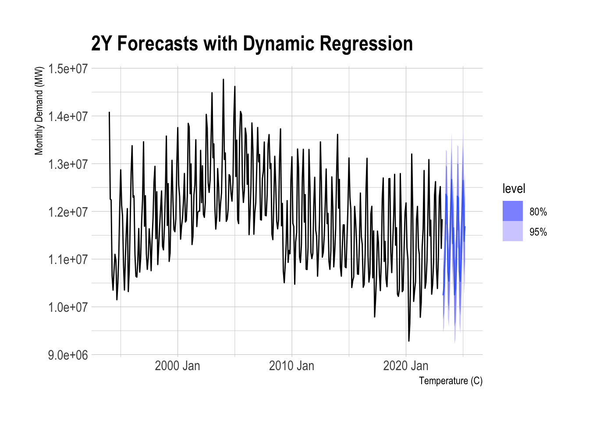

Forecasts for Ontario Energy Consumption
Background
There have been many fluctuations in temperature of Ontario, with hotter summers and colder winters leading to increased energy use. As climate change continues to intensify, these temperature extremes are expected to become more frequent, directly impacting energy consumption patterns. Forecasts for Ontario’s energy use must account for these shifts in temperature to ensure accurate predictions and better resource management in the future.
Historical Trends for Temperatures in Ontario
Visualizing historical temperatures for Ontario since 1994 reveals that the 10%, 50%, and 90% percentiles of temperature averages have all increased over the past 30 years.
The decomposition of historical temperatures shows a strong upward trend in temperatures, highlighting a clear increase over time. In addition, the decomposition reveals strong seasonality, with consistent patterns of temperature variation throughout the year. Alongside these observations, expert forecasts for future temperatures are widely available, driven by extensive research from climate scientists using advanced models to predict future temperature trends and their impacts.
Historical Data on Ontario Energy Consumptions
The decomposition of energy consumption data reveals a decreasing trend over time, alongside a strong seasonal component that reflects regular fluctuations throughout the year. While forecasts can be generated based on historical data, it is important to account for temperature changes and any anomalies to ensure accuracy in predicting future energy demand.
In fact, examining the relationship between temperature and monthly energy consumption reveals that higher temperatures in the summer lead to increased energy use due to air conditioning, while colder winters also drive up consumption for heating. The scatterplot suggests a non-linear relationship between temperature and energy demand, suggesting that historical temperature data could be a valuable predictor for forecasting future monthly energy consumption.
Model Selection for Temperature
To forecast future monthly energy consumption, it is crucial to first generate temperature forecasts. We will use an ARIMA model for this purpose. One of the key assumptions of the ARIMA model, due to its Moving Average (MA) component, is that the data must be stationary. However, the historical temperature data displays strong seasonality, which violates stationarity. To address this, we will apply seasonal adjustments to the data in order to properly determine the parameters for the ARIMA model.
ACF and PACF Plots for Temperature (Non-Adjusted)
ACF and PACF Plots for Temperature (Seasonaly-Adjusted)
By examining the ACF plot for the seasonally adjusted series, we observe a cut off at lag 4, suggesting that the lag could be used for the MA(4) terms in the non-seasonal component. Additionally, the strong negative spike at lag 12 indicates the presence of an MA(1) term in the seasonal component.
In the PACF plot, there is a clear indication at lag 1, pointing to an AR(1) term for the non-seasonal component. Similarly, the strong negative spike at lag 12 suggests an AR(1) term for the seasonal component.
We can compare our selected model to the AutoARIMA model generated by the fable package, which aims to minimize the AICc in a greedy manner. Upon comparison, we find that our custom model closely aligns with the optimal model produced by fable. It’s important to note that our model is an ARIMA(1,0,4)(1,1,1), as we previously applied seasonal differencing. When comparing the two ARIMA models, minimizing AICc and BIC is asympotically equivalent to Leave-one-out-Cross-Validation (M.Stone, 1977), making AICc a valuable metric for model selection.
# A mable: 1 x 2
autoARIMA ARIMA104111
<model> <model>
1 <ARIMA(1,0,0)(2,1,2)[12] w/ drift> <ARIMA(1,0,4)(1,1,1)[12] w/ drift># A tibble: 2 × 4
.model AIC AICc BIC
<chr> <dbl> <dbl> <dbl>
1 autoARIMA 533. 533. 560.
2 ARIMA104111 534. 535. 569.Preceding with our custom model, our ARIMA(1,0,4)(1,1,1) model can be written as follows with the Backshift notation:
\[ (1 - \phi_{1}B)(1 - \phi_{1}B^{12})(1- B^{12}) y_{t} = (1 + \theta_{1}B + \theta_{2}B^2 + \theta_{3}B^3 + \theta_{4}B^4)(1 + \theta_{1}B^{12})\epsilon_{t} \] Lastly, we can visualize the residuals and its distributions to check that they are normally distributed, alongside the Ljung-Box test. The Null hypothesis for the Ljung-Box test is that the residuals do not display autocorrelation with each other. Furthremore, the degrees of freedom for this test is equivalent to the number of variables used in the model (7). Therfore, if we want to fail to reject the Null hypothesis in order to confirm that our model captured the correlated data from the dataset.
# A tibble: 1 × 3
.model lb_stat lb_pvalue
<chr> <dbl> <dbl>
1 ARIMA104111 17.9 0.395Our p-value is 0.395 for the Ljung-Box test with a degree of freedom of 7; therefore, we conclude that the residuals are not autocorrelated, indicating that this model is a good fit at the 95% confidence level.
Therefore, using this model, we can generate future forecasts for Ontario’s temperatures as follows.
Model Selection for Energy Consumption
Now, we can fit the monthly energy consumption of Onatrio using two models.
- ARIMA model solely based on historical data
- Dynamic Regression model : Utilizes Temperature as an explanatory variable with ARIMA errors
ARIMA Model with historical data
For fitting the ARIMA model based on historical data, we will use AutoARIMA to select the most appropriate model.
# A mable: 1 x 1
`ARIMA(monthly_demand)`
<model>
1 <ARIMA(2,0,1)(0,1,1)[12] w/ drift>AutoARIMA suggests an ARIMA(2,0,1)(0,1,1) model, suggesting applying seasonal differencing and 2 AR and 2 MA components.
Dynamic Regression model
ACF and PACF Plots for Monthly Energy Consumption (Non-Adjusted)
ACF and PACF Plots for Monthly Energy Consumption (Seasonally-Adjusted)
Similar to the interpretation for temperature, the ACF plot shows a drop around lag 3, indicating an MA(3) component, along with a peak at lag 12 that suggests an SMA(1) component. In the PACF plot, we observe a drop around lag 2, pointing to an AR(2) component, while the spike at lag 12 indicates a SAR(1) component.
Now, we will fit a dynamic regression model with temperatures being an extraneous variable. The following model can be written as below:
\[ (1 - \phi_{1}B - \phi_{2}B^{2})(1 - \phi_{1}B^{12})(1- B^{12}) y_{t} = x_{temperature} +(1 + \theta_{1}B + \theta_{2}B^{2} + \theta_{3}B^{3})(1 + \theta_{1}B^{12})\epsilon_{t} \] Utilizing the forecasts generated for temperatures, we can generate forecasts for the monthly energy consumptions using this dynamic regression model as below.

# A fable: 24 x 5 [1M]
# Key: .model [1]
.model Month monthly_demand .mean Temp
<chr> <mth> <dist> <dbl> <dbl>
1 ARIMA(monthly_demand ~ 1 + Temp +… 2023 Apr N(1e+07, 1.6e+11) 1.02e7 9.10
2 ARIMA(monthly_demand ~ 1 + Temp +… 2023 May N(1e+07, 1.9e+11) 1.04e7 14.1
3 ARIMA(monthly_demand ~ 1 + Temp +… 2023 Jun N(1.1e+07, 2.1e+11) 1.10e7 19.0
4 ARIMA(monthly_demand ~ 1 + Temp +… 2023 Jul N(1.2e+07, 2.3e+11) 1.24e7 22.8
5 ARIMA(monthly_demand ~ 1 + Temp +… 2023 Aug N(1.2e+07, 2.3e+11) 1.23e7 22.1
6 ARIMA(monthly_demand ~ 1 + Temp +… 2023 Sep N(1.1e+07, 2.4e+11) 1.07e7 18.1
7 ARIMA(monthly_demand ~ 1 + Temp +… 2023 Oct N(1.1e+07, 2.4e+11) 1.05e7 12.1
8 ARIMA(monthly_demand ~ 1 + Temp +… 2023 Nov N(1.1e+07, 2.5e+11) 1.10e7 6.05
9 ARIMA(monthly_demand ~ 1 + Temp +… 2023 Dec N(1.2e+07, 2.5e+11) 1.21e7 0.792
10 ARIMA(monthly_demand ~ 1 + Temp +… 2024 Jan N(1.3e+07, 2.5e+11) 1.27e7 -3.01
# ℹ 14 more rowsCross-Validation
When we apply rolling-forecast-origin cross-validation to this time series, we find that the dynamic regression model outperforms the AutoARIMA model in terms of error by 1 - 2%. Although this error measurement captures only the training error, since using a separate testing set in time series cross-validation may lose valuable information, Temperature proves to be a strong predictor for forecasting energy consumption in Ontario.
# A tibble: 2 × 5
.model MAE RMSE MAPE RMSSE
<chr> <dbl> <dbl> <dbl> <dbl>
1 ARIMA(monthly_demand ~ 1 + Temp + pdq(2, 0, 3) + PD… 2.89e5 3.83e5 2.42 0.684
2 ARIMA(monthly_demand) 2.92e5 3.86e5 2.44 0.690Comparing with Actual Energy Consumptions
# A tibble: 1 × 5
.model MAE RMSE MAPE RMSSE
<chr> <dbl> <dbl> <dbl> <dbl>
1 ARIMA(monthly_demand ~ 1 + Temp + pdq(2, 0, 3) + PD… 2.83e5 3.41e5 2.42 NaNComparing the forecasts from April 2023 to August 2024, where the black line represents the actual energy consumption and the blue intervals represent our model’s forecasts, we can observe that the forecasts accurately predict the highest energy demands for July 2023, January 2024, and July 2024. These peaks align with the actual consumption trends from the past year. Additionally, the close fit between the actual data and our forecast intervals further demonstrates the model’s strong predictive capability.
Results
As we have demonstrated that including temperature as an explanatory variable improves the model, data on temperature changes could enhance the accuracy of forecasts for monthly energy consumption in Ontario. Additionally, reliable and frequently updated expert temperature forecasts allow for adjustments in energy consumption predictions based on significant changes in future temperatures.
Having accurate forecasts for energy consumption is crucial, as they can inform planning for maintenance and repairs of electricity-generating facilities. Moreover, if we have access to monthly supply data, information on energy storage, and costs associated with energy generation at specific times in Ontario, this scenario could be framed as an optimization problem. Utilizing dynamic programming or modeling this scenario as a Markov Decision Process, we could optimize production and reduce costs for energy generation in the province.